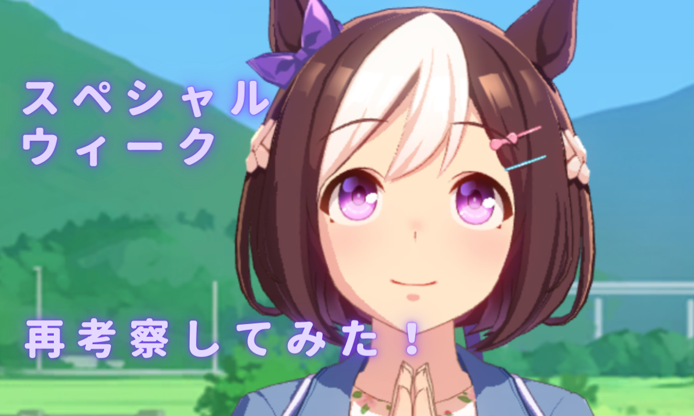
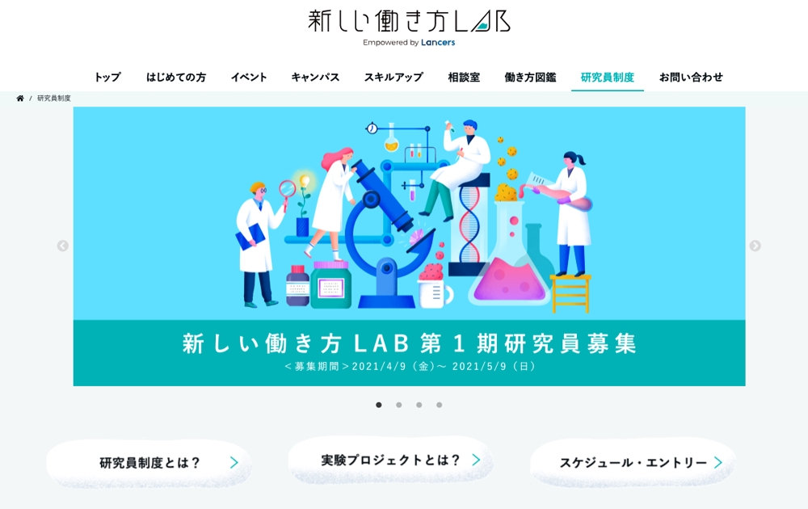
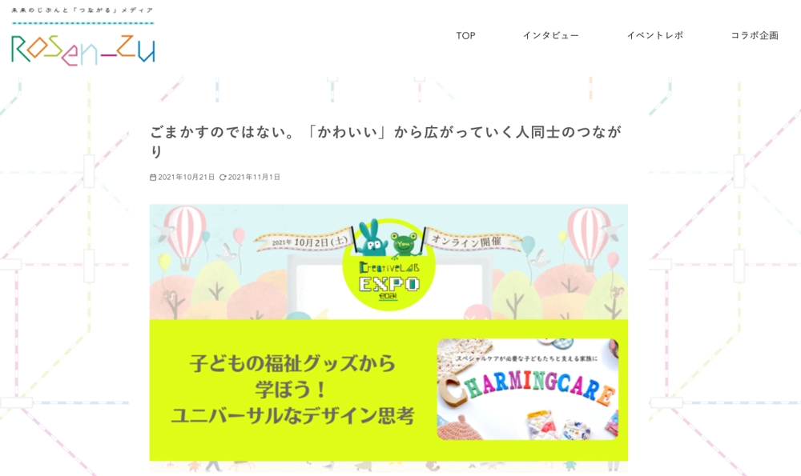
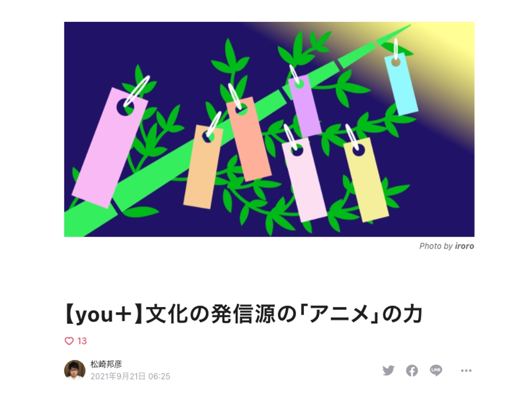
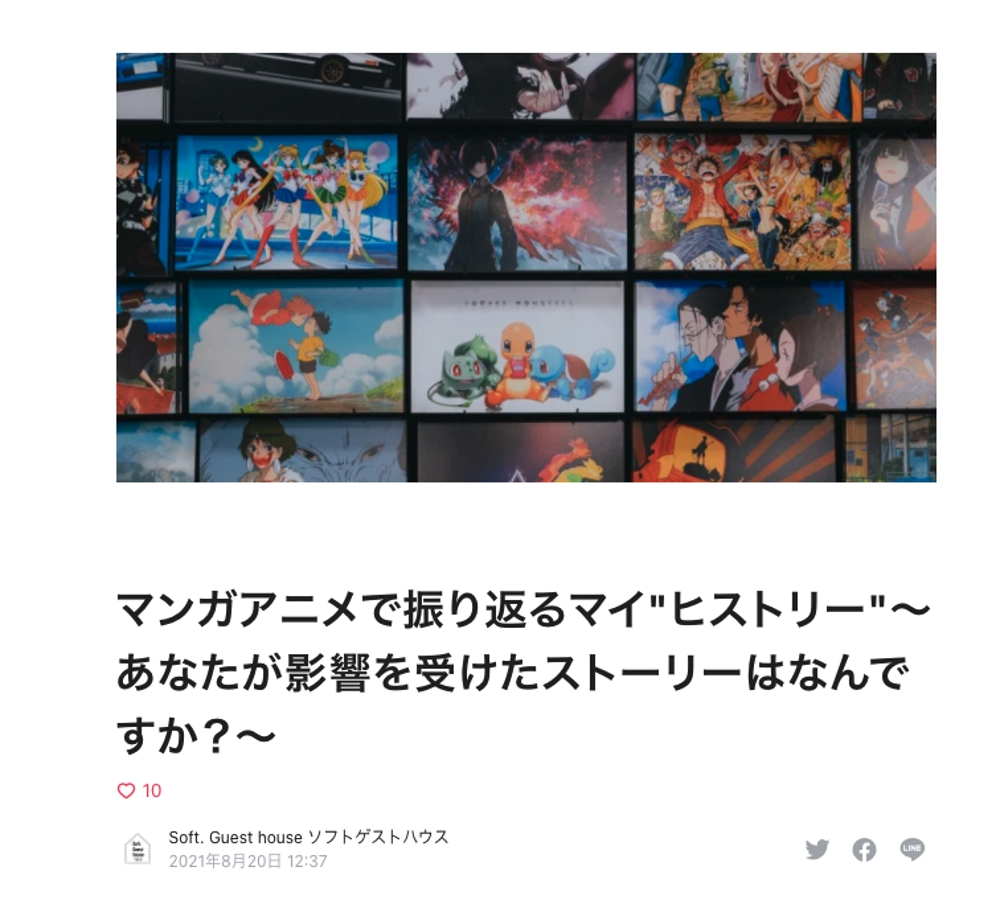

Service
ライティング
お客さまのご要望をヒアリングすることから始まります。人にはそれぞれに”悩み”を抱えています。その悩みを見つけ出して、文書で溶かしていくことができるよう全力を尽くします。
ナレーション・ボイス
”声”には力があると信じています。声という色を彩ることで、さまざまな意味づけができると考えており、一つ一つ全力で表現していきます。
◆◆◆
Works

ゲーム紹介やゲームの攻略など、ゲームを楽しく知ってもらうための記事を執筆しています。 ※補足その時々のキーワードなどを考慮しながらテーマ設定を行い、執筆しております。画像編集やWordPress投稿も行なっております。

ランサーズ・新しい働き方LABの研究員制度に参加した方へのインタビュー記事を作成しました。

ランサーズの新しい働き方LAB主催のクリラボEXPOのレポート記事を担当いたしました。・担当したタイトル「子どもの福祉グッズから学ぼう！ユニバーサルなデザイン思考」

CreativeLAB特別企画コンペ「you+」私を変えてくれたもの_文書部門で優秀賞を受賞。タイトル：【you＋】文化の発信源の「アニメ」の力

ソフトゲストハウスの自己分析を行うイベントに参加。その体験レポートを作成しました。
◆◆◆
Contact
現在、Lancersでランサーとして活動しています。お仕事のお依頼は、お手数ですが、Lancersを通してご相談いただければと思います。
松崎邦彦（Kunihiko Matsuzaki）のプロフィールページはこちら